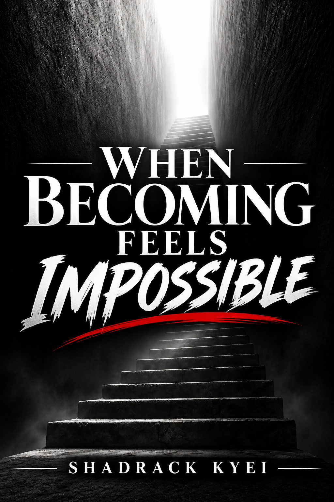

WHEN BECOMING FEELS IMPOSSIBLE
By Shadrack Kyei
A thoughtful exploration of growth, transformation, and the challenge of becoming. This book invites readers to approach change with patience and appreciate the life they are already living.
ORDER THE BOOK BACK TO HOMEThe Journey of Becoming
Growth is not always a straightforward journey. There are seasons when change feels difficult, when the future seems uncertain, and when becoming a different version of yourself feels impossible.
This book invites readers to reflect on personal growth, transformation, patience and the importance of appreciating the life they are already living.
About the Author
Shadrack Kyei is an emerging author whose writing explores personal growth, transformation, self-discovery, and the experiences that shape human life.
Through thoughtful reflections and meaningful storytelling, he hopes to encourage readers to approach life with patience, embrace their journey, and appreciate who they are becoming.